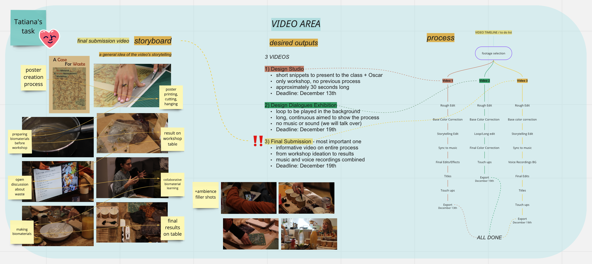
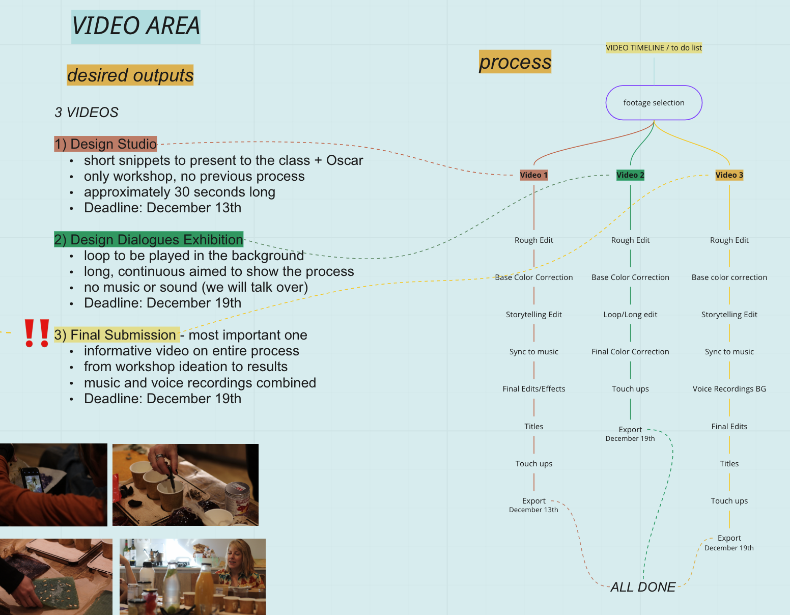

This week started with a holiday that I didn’t use as a holiday, but rather an opportunity for my Design intervention group to host our Biomaterials workshop. You can read all the details about it here.
Following the days of the workshop, Marina, Pippa and I had assigned each other various tasks to complete by Monday the 13th, when we would have our design Studio class with Oscar, knowing that this was when we would have to present a lot of our work. I had to contact the participants, asking them for feedback, and edit all the photos/videos so that we could showcase that material.
I began by creating a “Video Frame” in our Miro board, in which I would dump all of my micro to-dos. I created a section on the 3 different videos we needed, the storytelling framing behind them and the pipeline of everything that had to be done in order to complete them in time. Here is some of the work surrounding the videos:

Overview of the video board

Zoom in on video outputs & timeline.
I wanted to find a way to tell a logical story which the viewers could follow along easily, from the very beginning of the process up until the workshop results.